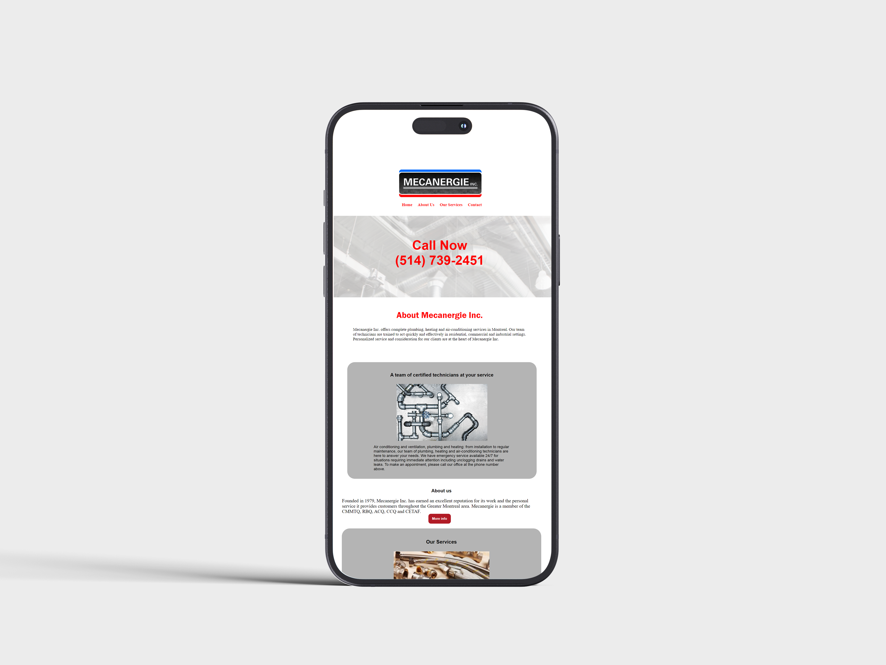

Client Website
Client
Mecanergie Inc. is a small business that specializes in the service and installation of residential and commercial plumbing, heating and air conditioning systems in the Greater Montreal area. Mecanergie Inc. has been in business since 1979 and provides emergency service 24/7. Mecanergie Inc. is licensed and certified in its industry.
Problem
Mecanergie wanted to update and streamline its current website for various reasons. Firstly, the current website has certain information which is outdated and inaccurate, including the fact that Mecanergie works on oil heating systems, which is no longer the case. The website also contains links to social media platforms (Facebook and Twitter) which the company does not have and are therefore irrelevant. In addition, Mecanergie feels that its current website is too distracting for its clientele, including the light grey color of the website’s text which makes it more difficult to read. The vast majority of Mecanergie’s new customers are already familiar with the services that they provide given that they are referred through existing clients and are not people who find them online. As a result, Mecanergie wanted a more concise website with a brief description of its services that is easier to read and navigate. Mecanergie believes that a more modern and simpler web layout will attract new and existing clients and provide a more professional appearance.
Goals
To create a simpler and more concise website for a plumbing, heating and air-conditioning service company that attracts the attention of its clientele, gives a brief summary of the services they provide and is easy to read and navigate.
Wireframes
Typography and Colors

Challenges
The main challenge for this website was the design process which I needed to streamline from their current website which is not properly aligned and is too distracting for the nature of their business and clientele. The new website had to have a consistent design and be user-friendly, easy to navigate and responsive on a mobile and desktop computer. The design process took me five weeks to complete as I needed to come up with a sketch design and choose colors that are appropriate for the website. I had to make sure that I had all of the necessary elements for the new website including the text, logo, links and images, some of which, apart from the logo, I wanted to update in accordance with the current services that Mecanergie provides.
Solution
My solution to overcome the challenges of Mecanergie’s current website was to create a more streamlined, simpler and concise website which is easier to navigate for its users. I researched various websites of companies in the plumbing, heating and air-conditioning industry which were modern, simple and user friendly. In simplifying the website, I wanted to incorporate sections including the home page, “About Us” which contains a concise list of services provided and a contact page. Since all client service calls are placed with Mecanergie by telephone, I wanted to highlight Mecanergie’s phone number in large bold numbers centered on the website as opposed to its current location on the top right-hand corner of the home page. Overall, I wanted to create a minimalistic design that is easy to read and navigate and does not provide clutter in terms of appearance and information.
Mobile Mockup
Process
I was in contact with Mecanergie’s team throughout the entire design process. We chose to use the colors of Mecanergie’s logo in the website which are red, black and blue. I chose black lettering for the wording in the website which is a nice contrast from the current light grey lettering which is more difficult to read. In order to highlight Mecanergie’s phone number which is crucial to its business as it is how service calls are placed, I included Mecanergie’s phone number in large red bold numbers centered on the website with the words “Call Now” above. This is immediately noticeable by all. I also removed outdated information from the website including heating services which are no longer provided and removed any links to social media platforms which Mecanergie does not have. I streamlined the website and provided a link to a concise description of the services provided by Mecanergie in the plumbing, heating and air- conditioning sectors. Overall, I created a website that is streamlined, concise and easy to read and navigate.
Outcome
Mecanergie was pleased with the outcome of the website including the content and design layout. They were impressed by the size, color and location of their phone number which I centered on the website in large bold red numbers with the heading “Call Now” above. Mecanergie’s phone number is crucial to their business as it is how clients contact them and now it is front and center when going on the website. They also liked that I included a contact page where clients can request additional information by email. The Mecanergie team was pleased that I provided a link to and description of their services in the plumbing, heating and air- conditioning sectors. They also found the current text which I changed to a bolder black from the previous light grey, easier to read and more appealing. They appreciated that I incorporated the blue, black and red colors of their logo in the website. Overall, they liked the more streamlined, bolder and concise website which is easy to read and navigate for their current and new clients.
Desktop Mockup